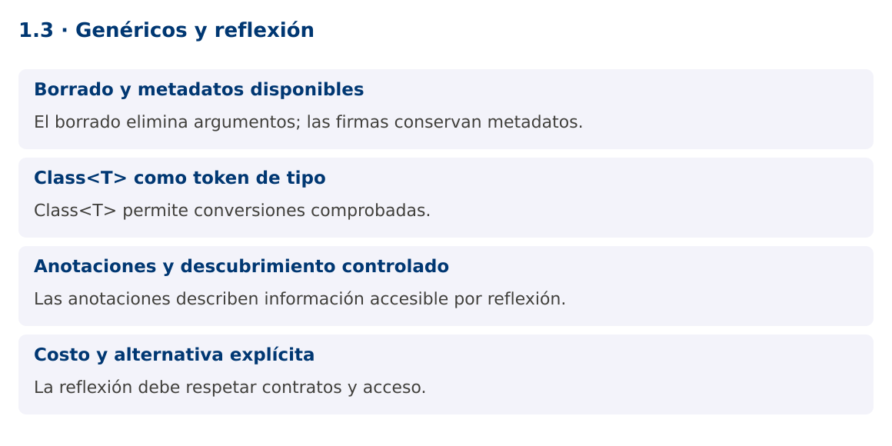

Programación Aplicada
1.3. Genéricos y reflexión

Autor: Ing. Pablo Torres, Mgtr.
Unidad: 1. Programación genérica
Proyecto de trabajo: CampusMonitor
Inicio del curso · Presentación editable · Ver en el navegador
1. Conceptos y ejemplos
Contexto
CampusMonitor puede registrar proveedores de sensores por nombre y crear adaptadores bajo demanda. La reflexión permite inspeccionar clases en ejecución, pero debe conservar contratos verificables y respetar el encapsulamiento.
Antes de empezar
Recupera el avance de 1.2. Conserva sus comandos y evidencias. Revisa el ejemplo completo antes de implementar la PC. Las demostraciones del material se ejecutan separadas del proyecto personal.
1.1. Borrado y metadatos disponibles
El compilador borra buena parte de los argumentos genéricos al producir bytecode. Una ArrayList
Algunas declaraciones conservan su firma genérica como metadatos. Field.getGenericType puede describir List
1.2. Class como token de tipo
Un argumento Class
getDeclaredConstructor().newInstance() exige un constructor compatible y accesible. La creación puede fallar por ausencia del constructor, acceso restringido o una excepción lanzada por el constructor. ReflectiveOperationException agrupa varios fallos relacionados, pero conviene preservar su causa y comunicar qué proveedor no pudo construirse.
static <T> T crear(Class<T> tipo) throws ReflectiveOperationException {
return tipo.getDeclaredConstructor().newInstance();
}
1.3. Anotaciones y descubrimiento controlado
Una anotación con RetentionPolicy.RUNTIME queda disponible para reflexión. Target restringe dónde puede usarse. Puede servir para identificar un adaptador o describir una unidad. No ejecuta código por sí misma: el programa que la inspecciona decide qué hacer.
Para cargar extensiones, prefiere un registro de clases permitido o ServiceLoader. No aceptes desde un archivo externo cualquier nombre de clase para ejecutarlo. Tampoco uses setAccessible(true) para saltar el diseño del modelo. En Java modular, los paquetes abiertos y exportados condicionan el acceso. La reflexión debe tener un propósito concreto y una superficie acotada.
1.4. Costo y alternativa explícita
La reflexión desplaza errores desde compilación a ejecución y puede hacer más difícil refactorizar. Un registro Map<String, Supplier
La demostración usa reflexión para inspección y construcción controlada. La PC compara esa vía con una fábrica explícita. En ambos casos, el resto de la aplicación debe depender de una interfaz estable, no de los detalles de cómo se creó la instancia.
Mapa de conceptos

2. Demostración guiada
2.1. Problema y contrato
CampusMonitor puede registrar proveedores de sensores por nombre y crear adaptadores bajo demanda. La reflexión permite inspeccionar clases en ejecución, pero debe conservar contratos verificables y respetar el encapsulamiento.
La implementación siguiente es una demostración resuelta. La PC de la sección 3 requiere desarrollar una ampliación propia sobre CampusMonitor.
Archivo completo: ReflexionDemo.java.
package edu.ups.pap.u01;
import java.lang.annotation.*;
import java.lang.reflect.*;
import java.util.*;
public class ReflexionDemo {
@Retention(RetentionPolicy.RUNTIME) @Target(ElementType.TYPE)
@interface Unidad { String value(); }
interface Sensor { double leer(); }
@Unidad("°C")
public static class Temperatura implements Sensor {
public Temperatura() {}
public double leer() { return 23.5; }
}
static class Historial { List<Double> valores = new ArrayList<>(); }
static <T> T crear(Class<T> tipo) throws ReflectiveOperationException {
return tipo.getDeclaredConstructor().newInstance();
}
public static void main(String[] args) throws ReflectiveOperationException {
Map<String,Class<? extends Sensor>> permitidos = Map.of("temp",Temperatura.class);
Class<? extends Sensor> tipo = permitidos.get("temp");
Sensor sensor = crear(tipo);
System.out.println(sensor.leer() + " " + tipo.getAnnotation(Unidad.class).value());
Type firma = Historial.class.getDeclaredField("valores").getGenericType();
System.out.println(firma.getTypeName());
System.out.println(new ArrayList<String>().getClass() == new ArrayList<Integer>().getClass());
}
}
2.2. Ejecución
Desde la raíz de este repositorio, con JDK 25:
java 01/1.3-genericos-reflexion/ejemplos/ReflexionDemo.java
Con el proyecto Gradle de demostraciones:
cd demostraciones
./gradlew runDemo -Pdemo=1.3
En Windows usa gradlew.bat. Ejecuta cada demostración desde una terminal nueva o vuelve a la raíz antes de cambiar de contenido.
2.3. Resultado y lectura de la ejecución
23.5 °C
java.util.List<java.lang.Double>
true
- Identifica los datos iniciales y las precondiciones que la demostración valida.
- Sigue las llamadas desde
mainoloopy relaciona las operaciones con los conceptos de la sección 1. - Contrasta el resultado con la salida esperada del ejemplo. Si el orden es concurrente, compara la invariante y no el orden de impresión.
- Cambia un dato del ejemplo y predice el resultado antes de ejecutarlo. Registra cualquier diferencia y su causa.
3. PC1.3 · Práctica de clase
3.1. Ampliación del proyecto
Esta actividad se resuelve en tu repositorio icc-pap-campusmonitor-apellido. Mantén la funcionalidad anterior. No reemplaces tu solución con los archivos de demostración del material.
- Agrega a CampusMonitor una interfaz FuenteLecturas y dos implementaciones simuladas con constructor público sin argumentos.
- Crea un registro permitido por nombre y una fábrica con Class
. Inspecciona una anotación de unidad sin acceder a campos privados. - Resuelve el mismo registro con Supplier y compara qué errores detecta cada alternativa. Un proveedor inexistente debe producir un mensaje controlado.
3.2. Comprobación y evidencia
Prueba los casos de esta sección y registra entradas, salida real y explicación. Incluye una ejecución normal y un caso de error. La evidencia debe permitir repetir el resultado desde el commit entregado.
| Caso que debes revisar | Comportamiento requerido |
|---|---|
| Proveedor registrado | Instancia que implementa el contrato |
| Nombre desconocido | Rechazo sin Class.forName arbitrario |
| Campo List |
Firma de la declaración visible |
En evidencias/PC1.3.md agrega: cambio realizado, archivos principales, comandos de ejecución, tabla de pruebas y enlace al commit final. No añadas una rúbrica a esta PC.
3.3. Commits de la actividad
git status
git add src evidencias
git commit -m "feat(pc1.3): genericos-y-reflexion"
git push
git log -1 --format=%H
Ajusta las rutas de git add a los archivos que realmente creaste. Incluye también configuración o SQL si cambiaste esos archivos. El último comando muestra el hash real que debes enlazar en tu evidencia.
Lo esencial
- El borrado elimina argumentos; las firmas conservan metadatos.
- Class
permite conversiones comprobadas. - Las anotaciones describen información accesible por reflexión.
- La reflexión debe respetar contratos y acceso.